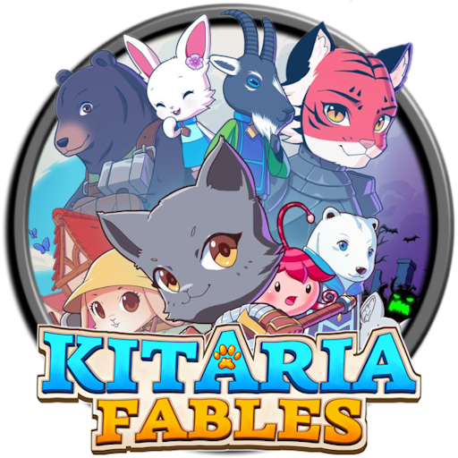
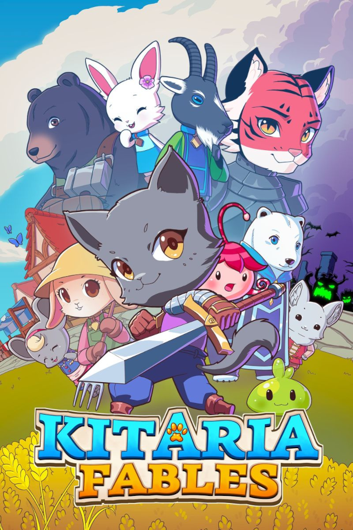

 Kitaria Fables
Details
|  | |
| Playtime | Not Played |
| Last Activity | Never |
| Added | 5/06/2025 3:25:10 |
| Modified | 6/06/2025 20:49:21 |
| Completion Status | Not Played |
| Library | Steam |
| Source | Steam |
| Platform | PC (Windows) |
| Release Date | |
| Community Score | |
| Critic Score | |
| User Score | |
| Genre | Action Adventure RPG |
| Developer | |
| Publisher | |
| Feature | Achievements Cloud Saves Co-Op Family Sharing Full Controller Support Multi-Player Shared/Split Screen Shared/Split Screen Co-Op Single-Player Supports Couch Co-Op Supports Drop-In/Drop-Out Co-Op Trading Cards |
| Links | Community Hub Discussions Guides News Store Page PCGamingWiki Achievements |
| Tag | Action Action RPG Action-Adventure Adventure Agriculture Archery Combat Co-op Co-op Campaign Crafting Cute Exploration Family Friendly Farming Sim Local Co-Op Local Multiplayer Loot Magic RPG Singleplayer |
Description
Kitaria Fables is a delightfully cute action adventure RPG with farming and crafting! Enter the cute world of Kitaria and take on the quests of your animal neighbours as they face a rising tide of darkness. Real time combat, exploration and dungeoneering sit alongside farming for provisions and the crafting of weapons and armour, and forging new spells to increase your power.


A peaceful land where nature lives in harmony - until now. As the wildlife around Paw Village becomes increasingly aggressive, The Empire has called upon you to investigate and defend its citizens. Make your way to Paw Village to your Uncles home, and from your new base, explore the huge world teaming with wildlife, resources and loot to help you in the long journey ahead.


Wield melee weapons and bows and forge new spells. Kit your loadout in a way which suits your preferred style of battle and craft magic, weapons and armour which compliment your play style. Do your prefer to burn your enemies from a distance, freeze them where they stand, or trust in sword or bow to do your damage?


You'll need much more than brute strength and magic to survive the coming darkness. The world of Kitaria is full of resources for you to use to your advantage. Slay monsters for ingredients, plant seeds and tend to your crops for provisions and gather materials and ores to craft more powerful weapons, armour and accessories.

Kitaria Fables is full of friendly (and not so friendly!) citizens. Make yourself known to your neighbours and fulfil their requests. The more you bond with your new friends, the more rewards you will receive as your relationships grow!


Kitaria Fables features a local co-op mode with Steam remote-play supported. Team up with a friend, double your firepower and use the freedom of Kitaria Fables' flexible combat system to compliment each other's strengths.
As ever, we are always appreciative of your support. If you like the look of our new project then do please join us in the community forums and hit Wishlist, to stay up to date with future news and development updates.
A peaceful land where nature lives in harmony - until now. As the wildlife around Paw Village becomes increasingly aggressive, The Empire has called upon you to investigate and defend its citizens. Make your way to Paw Village to your Uncles home, and from your new base, explore the huge world teaming with wildlife, resources and loot to help you in the long journey ahead.
Wield melee weapons and bows and forge new spells. Kit your loadout in a way which suits your preferred style of battle and craft magic, weapons and armour which compliment your play style. Do your prefer to burn your enemies from a distance, freeze them where they stand, or trust in sword or bow to do your damage?
You'll need much more than brute strength and magic to survive the coming darkness. The world of Kitaria is full of resources for you to use to your advantage. Slay monsters for ingredients, plant seeds and tend to your crops for provisions and gather materials and ores to craft more powerful weapons, armour and accessories.
Kitaria Fables is full of friendly (and not so friendly!) citizens. Make yourself known to your neighbours and fulfil their requests. The more you bond with your new friends, the more rewards you will receive as your relationships grow!
Kitaria Fables features a local co-op mode with Steam remote-play supported. Team up with a friend, double your firepower and use the freedom of Kitaria Fables' flexible combat system to compliment each other's strengths.
As ever, we are always appreciative of your support. If you like the look of our new project then do please join us in the community forums and hit Wishlist, to stay up to date with future news and development updates.